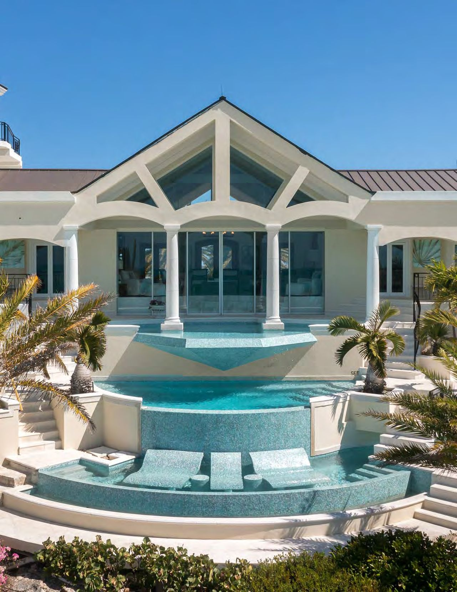

Emara Estate
House Rules & Good to Know
The villa’s rules, our own, and a few things that make the week easier.

From Emara
House rules
- No glass outside. Plastic glasses are provided for the decks, the pools and the beach.
- No smoking inside either house.
- Swim diapers for any child who is not toilet trained, every time they are in a pool.
- Rinse off the sand and dry off completely before coming back inside.
- Bath towels stay in the rooms. Use the pool and beach towels outside.
- Swimming is at your own risk. There is no lifeguard unless we have arranged one, so an adult or a nanny stays with every child near the water.
- No pets.
- Be considerate of the neighbors, especially at night.
- Treat the house and the water sports gear kindly. We are responsible for anything damaged.
Leaving day. Check-out is 10:00am on Sunday, November 29. Please have your room packed before breakfast.
Ours
A kosher house
- The kitchen is kosher all week. Dairy and meat are cooked and served with separate dishes and utensils.
- Please do not bring outside food into the kitchen, and check with the chef before using it.
- Breakfast is dairy. Lunch is dairy Sunday through Friday and meat on Saturday. Dinner is meat Sunday through Friday and dairy on Saturday night.
- Fish is always on its own platter with its own utensils.
See the menus for every meal.
Friday night, Nov 27 to Saturday night, Nov 28
Shabbat
From Friday night until Saturday night we put our devices away. That includes this site: no sign-ups and no messages on Shabbat.
- Friday
- Sunset at Emara is about 5:05pm. Candle lighting is 18 minutes before, about 4:47pm. Shabbat dinner follows.
- Saturday
- Shabbat lunch is the one meat lunch of the week. Sunset is about 5:05pm, and Shabbat ends at nightfall. Italian pizza night begins after Havdalah.
Sunset times are calculated for Turtle Tail. Victoria will confirm the exact candle lighting and Havdalah times.
The rhythm of the day
- 7:00am
- Early breakfast for the little ones
- 7:30 to 10:30am
- Breakfast
- 12:00pm
- Kids’ lunch with the nannies
- 1:00pm
- Lunch
- 5:30pm
- Kids’ dinner with the nannies
- 7:30pm
- Dinner
Who looks after us
- A house manager, two butlers and a bartender.
- A chef and a kitchen helper for every meal.
- Housekeeping every day, and security at the gate around the clock.
Already at the house
- Two pools, a private beach and a dock.
- Clear kayaks, paddleboards, snorkel gear, pool floats, beach toys and life vests.
- A tennis court with a basketball net, a gym, a billiards room, life-size chess, cornhole and board games.
- Karaoke, and Sonos speakers in the main living areas.
- A bounce house with a water slide, a bouncy castle and a bubble machine for the kids, from Monday.
- Air conditioning in every room, WiFi, linens, towels and bath amenities.
Find everything on the estate map.
Before you travel
- Passports for everyone, babies included.
- Money. Turks and Caicos uses US dollars.
- Time. The islands keep the same time as New York.
- Luggage tags. Tag every bag with its room: turquoise for East, coral for West. See Rooms.
- At the airport. Providenciales airport is small, with two baggage carousels and limited WiFi. Luggage carts cost $5 and porters are on hand. After immigration, bags and customs, our Mr. VIP drivers will be waiting.